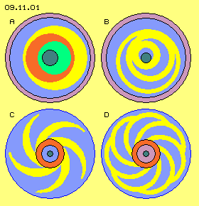
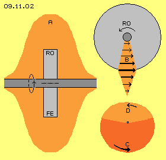
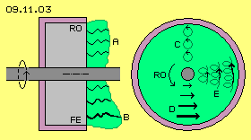
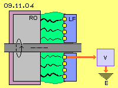
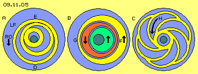
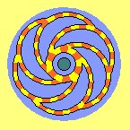
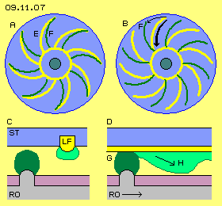
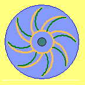
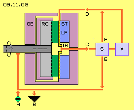

Kornkreise
Seit einigen Jahre erscheinen vermehrt ´Kornkreise´, besonders in England, aber auch anderen Ländern. Natürlich gibt es Fälschungen, aber einige Bilder sind von so hoher Qualität, wie sie nur ´intelligente Wesenheiten´ erzeugen konnten. Ich möchte niemanden überzeugen, jedoch sind für mich die ´echten´ Kornkreise wichtige Mitteilungen, die uns ´jemand´ zukommen lassen will. Leider sind wir meist zu unbedarft, die verschlüsselten Informationen zu entziffern.

Um die Jahrhundert-Wende traten häufig Motive auf, deren Elemente in Bild 09.11.01 farbig differenziert sind. Ich interpretierte diese Zeichnungen als Konstruktions-Hinweise. Damals untersuchte ich Rotor-Systeme, um per Zentrifugal- und/oder Gravitations-Kraft ein Drehmoment zu gewinnen (z.B. mittels ineinander geschachtelten Rädern und exzentrischen Ringen). Leider sind diese rein mechanischen ´Perpetuum Mobile´ bis heute nicht erfolgreich (obwohl es möglicherweise ein gewisser Johann Bessler alias Offyreus schon vor ein paar hundert Jahren zustande brachte).
In vorigen Kapiteln zum Kugellager-Effekt gab es in Ringen abrollende Zylinder, die mich an Kornkreise erinnerten. Die Zielsetzung ist hier aber nicht die Entwicklung komplexer Räderwerke. Vielmehr soll ein möglichst intensives Schwingen des Äthers an Leiter-Oberflächen erreicht werden, also die direkte Erzeugung von Strom. Optimale Lösungen basieren in aller Regel auf einem einfachen Prinzip und ´schönen´ Formen - wozu diese Kornkreise vielfältig Anregung geben.
Simpler Rotor, umfangreiche Aura
In Bild 09.11.02 ist ein einfache Scheibe auf einer Welle (dunkel-grau) fest montiert und dieser Rotor (RO, hell-grau) dreht um die Systemachse. Dabei bewegen sich real aber keine ´festen Teilchen´ im Raum. Die Atome sind vielmehr Wirbelkomplexe aus Äther und nur deren Bewegungsmuster wandert im prinzipiell stationären Äther im Kreis herum. Selbst bei solch einfachen Konstruktionen ergeben sich seltsame Erscheinungen. Wenn z.B. eine Scheibe aus Weicheisen (FE) schnell und lang genug rotiert, wird der ´Spin´ der Atome ausgerichtet und das Material wird ´magnetisiert´. Die Ursache ist folgende: die Wirbel der Atome sind nicht völlig symmetrisch, die ´sperrigen´ Teile bleiben jeweils im Äther etwas zurück, der ganze Wirbelkomplex wird so ausgerichtet, dass sich insgesamt der geringste Widerstand ergibt. Wenn dann viele Atome gleich-gerichtet sind, wird auch der Äther dazwischen ein geordnetes Bewegungsmuster aufweisen. Wenn sich diese Äther-Bewegungen analog zu Magnetfeldlinien verhalten, wirkt die Rotor-Scheibe wie ein (schwacher) Magnet.

Wenn der Wirbelkomplex eines Atoms durch einen Bereich des stationären Äthers hindurch geeilt ist, kommt dieser Äther zurück zu seinem vorigen, originären Bewegungsmuster des Freien Äthers. Wenn aber Atome wiederholt in gleicher Weise durch diesen Bereich fliegen, kehrt der dortige Äther nicht mehr vollkommen zurück in das neutrale Bewegungsmuster. Die Atome hinterlassen praktisch Spuren in diesem Bereich. Das Schwingen wird verzerrt, indem es sich rasch in Richtung des Drehsinns bewegt und langsamer zurück kommt. Weil aller Äther ein lückenloses Ganzes ist, muss der benachbarte Äther ebenfalls diese schlagende Bewegungs-Komponente übernehmen. Rund um die rotierende Scheibe bildet sich eine weiträumige Aura (A, hell-rot). Dieser Bereich gleichartiger Ätherbewegung ist weit größer als hier skizziert, besonders wenn Magnete rotieren. Bei John Searl war die Aura um seine Scheiben zum Teil sogar sichtbar. Bei den Experimenten von Roschtschin (andere Schreibweisen sind Roschin oder Rochtchin) und Godin waren Auswirkungen in Nebenräumen und anderen Stockwerken zu beobachten (siehe vorige Kapitel). Diverse Erfinder benutzten diesen Neben-Effekt von ´Schwungrädern´, meist ohne diesen Äther-Hintergrund zu kennen.
In diesem Bild rechts oben ist der Rotor (RO) im Querschnitt skizziert. Die drehende Scheibe bildet einen starren Wirbel mit von innen nach außen ansteigender Geschwindigkeit im Raum. Entsprechend stärker wird die schlagende Komponente im Äther, die am Rand größte Intensität erreicht (siehe Pfeile bei B). Der Äther im Umfeld weist ebenfalls dieses Schlagen im Drehsinn auf, allerdings nach außen abnehmend im Sinne eines Potential-Wirbels. In der weiträumigen Aura erfolgt der Ausgleich zum Freien Äther in radialer wie in axialer Richtung (wiederum sehr viel weiträumiger als hier skizziert ist).
In diesem Bild unten rechts ist noch einmal wiederholt, wie sich diese ´schlagende Komponente´ ergibt, z.B. durch die Überlagerung von zwei Kreisbewegungen. Während einer Zeithälfte schwingt der Äther beschleunigt auf einer langen Strecke (dunkel-roter Sektor C). In der anderen Zeithälfte kommt er langsam zurück auf einem kurzen Weg (hell-roter Sektor D). Aller Äther bewegt sich auf einem lokal begrenzten Raum, ist insofern ´stationär´. Details hierzu sind umfangreich beschrieben in früheren Kapiteln.
Ladung an der Rotor-Oberfläche

Wie bei den Maschinen der vorigen Kapitel muss das System vor dem Starten aufgeladen werden. Das zweite konstruktive Element ist also die elektrostatische Ladung an der Oberfläche des Rotors. Nur an einer Seitenfläche der Scheibe muss Ladung existieren. Darum ist in Bild 09.11.03 der Rotor (RO, hell-grau) an den anderen Seiten mit einem isolierenden Material (pink) beschichtet. Der Rotor ist breiter angelegt als für diese Ladung notwendig wäre, damit innerhalb der Rotor-Masse und in der umgebenden Aura sich obige Äther-Bewegung möglichst intensiv entwickeln kann.
Die Ladung selbst besteht aus synchron schwingendem Äther, hier symbolisiert durch die mehrfach gewendelten schwarzen Verbindungslinien. Generell wird eine elektrostatische Ladung (A, hell-grün) durch den Ätherdruck an die Oberfläche gepresst in einer Schicht gleichmäßiger Höhe - wenn der Rotor nicht dreht. Wenn der Rotor aber dreht, wird das Ladungs-Schwingen durch die schlagende Komponente der Rotation überlagert. Je weiter zum Rand der Scheibe, desto intensiver wird das Schwingen, wie durch die dicke schwarze Verbindungslinie bei B angezeigt ist. Dieses starke Schwingen reicht entsprechend weiter in den Raum hinaus (hier nach rechts).
Rechts zeigt dieses Bild eine Sicht auf die Ladung an der Oberfläche des Rotors. Wenn der Rotor still steht, kann man sich die Ladung als ein Schwingen benachbarten Äthers auf gleichförmigen Kreisbahnen vorstellen, wie durch die drei Kreispfeile bei C angezeigt ist. Im laufenden Betrieb dreht sich der Rotor (RO, siehe gekrümmten Pfeil). Die Atome am Rand bewegen sich am schnellsten durch den Raum und analog dazu wird die schlagende Komponente stärker, wie durch die Pfeile bei D angezeigt ist. Dadurch werden die Kreis-Bewegungen der Ladung jeweils nach vorn (im Drehsinn des Systems) verlagert. Daraus ergibt sich ein ´girlanden-förmiges´ Bewegungsmuster, wie bei E schematisch skizziert ist. Parallel zur Drehung der materiellen Scheibe, wandert also das Bewegungsmuster der Ladung vorwärts. Die elektrostatische Ladung ´haftet´ insofern an der rotierenden Oberfläche.
Ladungs-Leitbahnen

Ein möglichst einfaches System wird erreicht, wenn dieser simple Rotor das einzig bewegliche Bauelement ist. Parallel dazu rotiert die Ladung an seiner Oberfläche. Zum normalen Ladungs-Schwingen addiert sich die schlagende Komponente. Schon bei einer kleinen Scheibe von wenigen Zentimetern Durchmesser ist die Bewegung am Rand vielfach intensiver als innen. Zielsetzung muss nun sein, dieses starke Ladungsschwingen im gesamten Innenraum zu erreichen bzw. in gewünschte Richtung zu führen. Dazu dient das dritte konstruktive Element, das analog zu früheren Kapiteln als ´Ladungsfänger´ bezeichnet ist.
In Bild 09.11.04 sind diese Elemente schematisch skizziert. Der Ladungsfänger (LF) ist fest mit dem Gehäuse verbunden, also stationär. Er besteht aus nicht-leitendem Material (blau), in welchem elektrisch leitende Bahnen (gelb) eingelassen sind. Elektrostatische Ladung kann auch an Nicht-Leitern existieren, z.B. wie am Beispiel eines PVC-Lineals diskutiert wurde. Die Oberflächen dieser amorphen Materialien sind jedoch rauh, so dass Verbindungslinien der Ladung aus ´Bergspitzen´ heraus ragen oder ortsfest in Senken festgehalten werden. Die elektrostatische Ladung ist darauf weitgehend ortsgebunden bzw. es kann an nicht-leitendem Material kein elektrischer Strom fließen.
Im Gegensatz dazu ist die Oberfläche von Leitern glatt und damit ´rutschig´ für Ladung. In aller Regel sind die Atome von Leitern gitterförmig angeordnet, so dass Ladung z.B. girlanden-förmig von einem Atom zum nächsten vorwärts schwingen kann. Die Leiterbahnen des Leitungsfängers sind nun so zu gestalten, dass ein zweckdienlicher Fluss von Ladung erreicht wird.
Einwärts-Drift

In Anlehnung an die oben skizzierten Kornkreise sind in Bild 09.11.05 drei alternative Anordnungen der Leiterbahnen auf dem Ladungsfänger (LF) dargestellt. Dieser Stator besteht also vorwiegend aus nicht-leitendem Material (blau). Darin eingebettet sind leitende Bahnen (gelb). Der Rotor ist linksdrehend, so dass auch dessen Ladung linksdrehend an den Oberflächen der stationären Leiterbahnen entlang gleitet (siehe Pfeil RO).
Links bei A sind die Leiterbahnen in Form obiger drei ineinander geschachtelten Ringe angeordnet. Eine Ladung ist momentan z.B. im Bereich D positioniert. Durch den Schub der Rotor-Ladung wandert sie einwärts zur Position E. Das starke und schnelle Schlagen am Rand des Systems (d.h. die intensive Ladung) wird damit hinein getragen an einen kleineren Radius - und dreht dort schneller als der Rotor. Analog dazu wird auch auf den anderen Leiter-Ringen die Ladung nach innen verlagert.
Mittig in diesem Bild bei B ist das generelle Schema der ´Halbmond-Kornkreise´ dargestellt. Es sind drei Leiterbahnen (gelb, rot, grün) vorhanden, jeweils mit einem breiten und einem schmalen Abschnitt. Die Ladung vom breiten Abschnitt wird zum Engpass geschoben, hier z.B. vom Bereich F nach G (und analog auf den beiden anderen Leitern). Die Ladungen werden dabei einwärts auf einen kürzeren Radius geführt - mit ihrer ´überhöhten´ Geschwindigkeit - und zusätzlich aufgetürmt an den jeweiligen Engstellen.

Rechts in diesem Bild bei C ist das häufige ´Blumen-Muster´ von Kornkreisen dargestellt. Die Ränder der ´Blütenblätter´ stellen hier die Leiterbahnen (gelb) dar. Die linksdrehende Rotor-Ladung schiebt die Stator-Ladungen fortwährend einwärts, wie durch Pfeil H angezeigt ist. Die Leiterbahnen bilden mittig einen Ring, auf dem alle Ladung letztlich aufgetürmt wird. In dieser Animation sind einzelne Abschnitte der Ladung rot markiert. Alle wandern einwärts und addieren sich im mittigen Ring zu einer hohen und schnell drehenden Ladung.
Ständiger Strom
Um es noch einmal deutlich zu betonen: hier fließ kein Strom aus ´Ladungs-Teilchen´ in Form freier Elektronen. Es findet auch keine Verlagerung von ´Ladungs-Masse´ statt. Nur das Bewegungsmuster elektrischer Ladung wandert im Äther vorwärts. In diesem lückenlosen Medium bewegt sich benachbarter Äther immer möglichst analog zueinander. Hier rotieren z.B. die Bewegungsmuster der Rotor-Atome um die Systemachse. Entsprechend dazu dreht auch das Bewegungsmuster der Rotor-Ladung um die Systemachse. Auch der Äther an den Oberflächen der stationären Leiterbahnen übernimmt dieses Ladungs-Schwingen. Davon ungehindert und unvermindert dreht die Rotor-Ladungs-Schicht weiter um die Systemachse. An den Leiterbahnen kann die generierte Ladung nicht vollständig der schlagenden Komponente (in jeweils tangentialer Richtung) folgen, wohl aber kann diese Ladungsschicht auf dem Leiter einwärts rutschen. Der einwärts benachbarte Äther übernimmt jeweils die schlagende Komponente. Weil der Rotor permanent unter dem Leiter hindurch läuft, schwingt letztlich aller Äther entlang der Leiterbahnen mit dieser einwärts gerichteten Komponente.
Die Äther-Bewegungen kumulieren am jeweils engsten Radius, was identisch ist mit hoher Ladung bzw. hoher Spannung - z.B. gegenüber der Normal-Ladung der Erde. In vorigem Bild 09.11.04 ist darum rechts schematisch angezeigt, dass die hohe Ladung über einen Leiter (rot) abfließen kann in die Erde (E) und der permanente Strom für einen Verbraucher (V, blau) nutzbar ist. Je nach Bauart ist der Strom an unterschiedlicher Stelle abzugreifen, z.B. bei den drei einfachen Ringen jeweils innen, bei den drei Halbmonden jeweils an den Engstellen, beim Blumen-Muster am inneren Ring.
Quelle und Senke
Ein permanenter elektrischer Strom ´aus dem Nichts heraus´ ist natürlich eine provokante Vorstellung. Aber auch beim Faraday-Generator (und anderen Unipolar-Generatoren der vorigen Kapitel) ist die Quelle und Ursache des generierten Stroms mit herkömmlichem physikalischen Verständnis von Elektrizität nicht zu erklären. Auch bei einem PVC-Lineal und einem Wolltuch existiert anfangs keine Ladung. Diese wird nur durch das Reiben generiert und diese Ladung kann z.B. mit einer Kupferdraht-Bürste abgenommen werden - und erneutes Reiben erzeugt neue Ladung. Voriger Rotor könnte einen Durchmesser von 10 bis 15 cm aufweisen und mit 10000 oder auch 20000 Umdrehungen je Minute drehen, also mit hoher Geschwindigkeit am Stator entlang ´reiben´. Anstelle des Wolltuches verwirbelt die Rotor-Ladung den Äther an den Stator-Oberflächen (auch an deren ´PVC-Bereichen´). Anstelle voriger Kupfer-Bürste bieten die Leiterbahnen einen Weg zum Abfluss der generierten Ladungswirbel.
Allein die schnelle und dauerhafte Rotation einer massiven Scheibe erzeugt eine weiträumige Aura synchron ´drehenden´ Äthers (real nur dieses schlagenden Bewegungsmusters rundum in radialer und axialer Richtung). Bei den Unipolar-Maschinen voriger Kapitel wurden Magnete eingesetzt, deren Magnetfeldlinien ein zusätzlich schwingendes Bewegungsmuster bilden. Hier nun wird beim Starten des Systems eine Schicht Ladung an der Rotor-Oberfläche aufgetragen. Deren geordnetes Bewegungsmuster addiert sich zur Äther-Aura des Rotors. Durch die Leiterbahnen wird das intensive Schwingen konzentriert im Zentrum des Systems. Dort ergibt sich hohe Ladungsdichte, die mit ´überhöhter´ Geschwindigkeit um die Systemachse rotiert (und möglicherweise eine Selbst-Beschleunigung des Rotors ergibt).
Gegenüber der Umgebung besteht somit ein Gradient an Bewegungs-Intensität. Diese resultiert aus dem Bewegungsmuster der originären Rotor-Ladung, das ´aufgeheizt´ ist durch die Rotor-Drehung und das entlang des Stators nach innen wandert. Dieses generelle Bewegungsmuster elektrischer Ladung repräsentiert also hohe Spannung. Wenn diesem Potential ein Weg zu Bereichen geringerer Bewegungs-Intensität angeboten wird, fließt Strom entlang des Leiters zur Erde hin, auch durch einen Verbraucher hindurch. Diese Maschinchen generieren fortwährend die Verwirbelung des Äthers zwischen Rotor und Stator. Diese lokale Anhäufung ´stressiger´ Bewegung wird anschließend vom generellen Druck des umgebenden Äthers hinaus gepresst in die Senke normaler Ladungs-Dichte - wobei der elektrische Strom entlang eines Leiters im Verbraucher nutzbar ist.
Pulsierender Strom-Kreislauf

Anstelle eines kontinuierlichen Stroms könnte dieser natürlich auch zeitweise aufgestaut und intermittierend abgeführt werden. Nachfolgend wird eine Variante dargestellt, die generell einen pulsierenden Strom erzeugt. Die Funktion dieses Generators ist auch mit konventionellem Verständnis von Elektrizität zu erklären. Ausgangspunkt ist das häufig auftretende Kornkreis-Motiv des ´Sonnenrades´, wie z.B. in obigem Bild 09.11.01 bei C dargestellt ist. Hier in Bild 09.11.07 ist links bei A beispielsweise ein Sonnenrad mit acht spiraligen Armen dargestellt.
Bei den Sonnenrädern sind oft die Kanten der ´Spiralarme´ hervor gehoben. Hier werden diese Kanten so interpretiert, dass sie Bestandteile einerseits des Stators und andererseits des Rotors sind, sich also auf unterschiedlichen axialen Ebenen befinden. Die Vorderkanten (E, gelb) wären dann die Leiterbahnen des Stators, die mittig in einem Ring zusammen gefasst sind. Die etwas stärker gekrümmten Hinterkanten (F, grün) stellen Bereiche der Rotor-Ladung dar. In diesem Bild rechts bei B hat sich der Rotor etwas gedreht (siehe dünnen Pfeil). Die grüne Kante F hat sich also vor der gelben Leiterbahn entlang bewegt. Der Schnittpunkt zwischen beiden Kurven wandert dabei schnell nach innen (siehe dicken Pfeil).
Unten links bei C ist schematisch ein Ausschnitt skizziert. Der Stator (ST) besteht aus nicht-leitendem Material (blau), aus dem die (spiralig gekrümmten) Leiterbahnen (LF, gelb) etwas heraus ragen. An diesen Stegen haftet Ladung, die hier als hell-grüner Bereich markiert ist. Der Rotor (RO) besteht z.B. aus Eisen (grau), seine Oberfläche ist aber zum großen Teil mit einer nicht-leitenden Schicht (pink) abgedeckt. Aus dieser ragen (spiralig gekrümmte) Stege hervor. An den (gerundeten) Oberflächen der Stege konzentriert sich die starke Rotor-Ladung, wie hier durch den dunkel-grünen Bereich markiert ist. Solang der Rotor in Ruhestellung ist, gibt es keine Interaktion zwischen beiden Ladungen.
Unten rechts bei D dreht sich der Rotor (siehe Pfeil) und damit streicht der Rotor-Steg unter dem gelben Stator-Steg hindurch. Die starke Ladung (G, dunkel-grün) des Rotors schiebt die schwächere Ladung des Stators vor sich her. Es wird ein Ladungs-Berg aufgetürmt (siehe Pfeil H) und auf der gekrümmten Leiterbahn des Stators nach innen geschoben. Diese Interaktion zwischen ´elektrischen Feldern´ ist bekannt. Deren Ursache und die zugrunde liegenden Bewegungen des realen Äthers sind in Kapitel 09.04. ´Ladung´ bei Bild 09.04.04 beschrieben.
Am mittigen Ring der Leiterbahnen treffen aus allen Spiral-Armen zeitgleich die Ladungsberge ein und addieren sich zu einem hohen Potential. Wenn in diesem Moment eine Leitung frei gegeben wird, kann die Spannung durch einen Strom-Impuls abgebaut werden. Real wird dabei die hohe und intensive Ladungsschicht dieser Quelle durch den generellen Ätherdruck nieder gepresst und nivelliert entlang des Leiters bis zu einer Senke.

In dieser Animation drehen die Rotor-Ladungs-Stege (grün) über den stationären Leiterbahnen. Deren ursprüngliche Ladung (gelb) wird am jeweiligen Schnittpunkt beider Kurven nach innen gedrückt. Diese ´Kompression´ der Ladungen wird hier durch zunehmend dunkleres Rot verdeutlicht. Wenn der Schnittpunkt den inneren Ring erreicht hat, sind die Leiterbahnen ´leer-gefegt´. Alle Ladung ist im inneren Ring aufgestaut. Wenn ein Schalter den Weg frei gibt, kann der Strom abfließen zu einem Verbraucher. Von dort kann er im nächsten Moment zurück fließen in die ´leeren´ Leiterbahnen. Dessen verbliebene Strom-Stärke bildet dort wieder eine neue Ladungsschicht. Deren geringe Höhe wird in der nächsten Phase wieder komprimiert. In einer geschlossenen Leiterschleife findet also pulsierend ein Kreislauf des Stromes statt.
Funktions-Modell
Die prinzipielle Konzeption und vorige Abläufe sind rein schematisch in Bild 09.11.09 skizziert. In einem isolierten Gehäuse (GE, pink) ist der Rotor (RO, grau) drehbar gelagert. Auf einer Seitenfläche (hier rechts) ragen die gekrümmten Stege aus der Oberfläche heraus und tragen die starke Rotor-Ladung (dunkel-grün). Diesen gegenüber befindet sich der Stator (ST, dunkelblau), aus welchem die gekrümmten Stege der Leiterbahnen (LF, gelb) etwas heraus ragen. Alle Leiterbahnen münden mittig im Inneren Ring (IR, gelb). Die alternativen Wege des elektrischen Flusses sind durch rote Linien markiert. Eingezeichnet ist ein Verbraucher (V, hell-blau) und eine Steuer-Einheit (S, hell-blau). Deren technische Ausführung ist hier nicht detailliert. Ihre prinzipiellen Funktionen sind nachfolgend nur verbal beschrieben.
Beim Starten des Systems muss der Rotor aus einer externen Quelle (A) aufgeladen werden, z.B. mittels Schleifkontakt an der Welle. Beim Abstoppen des Systems muss die Ladung aus dem System wieder abfließen können in die Erde (B). Dieses System könnte durchaus selbst-beschleunigend sein. Darum muss diese Schaltung zur Entladung in jedem Fall installiert sein.

Im laufenden Betrieb wird die Ladung aus den Leiterbahnen komprimiert im Inneren Ring (IR, gelb). Wenn dort maximale Spannung anliegt, muss der Weg C durch die Steuereinheit frei geschaltet werden. Der Strom wird im Verbraucher verwertet und fließt über den Weg D zurück zu den äußeren Enden aller Leiterbahnen. Dort verteilt sich die Ladung auf die Flächen der Leiterbahnen und die Fläche des Inneren Rings. Die Kompression der Ladung erfolgt in etwa in Relation dieser Flächen. Die ursprüngliche Ladung kann im Inneren Ring z.B. die dreifache Ladungs-Dichte erreichen. Die Rotor-Ladung muss mindestens entsprechend hohe Dichte aufweisen (wobei rotierende Ladung intensivere Äther-Wirbel darstellt, also immer stärker ist als entsprechende stationäre Ladung).
Die Ladung des Rotors verliert an Stärke nur aufgrund Abstrahlung. In der Steuereinheit könnte per Trafo höhere Spannung erzeugt werden, die bei Bedarf über den Weg E den Verlust nachlädt (wobei die Stromrichtung auf allen Wegen natürlich durch Dioden usw. abzusichern ist). Diese Funktion könnte auch beim Starten zur Aufladung genutzt werden oder im laufenden Betrieb zur Erzeugung höherer Spannung. Entsprechend könnte auch per Trafo über den Weg F die originäre Ladung der Leiterbahnen erhöht werden (bis zu voriger Ladungs-Relation). Durch geeignete Steuerung kann dieser Generator damit variable Stromstärken erzeugen.
Bauvarianten
Dieses Prinzip kann natürlich in vielen Varianten realisiert werden. In jedem Fall ist ein motorischer Antrieb erforderlich. Bei gängigen Generatoren wird mit Magnetfeldern gearbeitet und es treten entsprechende Rückhalte-Kräfte auf. Hier interagieren nur elektrische Felder bzw. Ladungen, so dass praktisch nur mechanische Reibung in den Lagern zu überwinden ist. Je nach Drehzahl des Antriebs ergibt sich die Frequenz der erzeugten Strom-Impulse.
Wenn beispielsweise zehn Spiralarme verwendet werden, ergeben sich hundert Stromimpulse je Sekunde schon bei 600 Umdrehungen je Minute. Diese Maschine könnte einen Durchmesser von z.B. 40 cm aufweisen und es stünden dann große Flächen für die Rotor-Ladung und die Stator-Leiterbahnen zur Verfügung. Dieser Generator könnte also durchaus Leistung in brauchbarer Größenordnung liefern.
Im nächsten Kapitel wird eine weitere Variante inklusiv der Steuerung durch mechanische Bauelemente dargestellt.